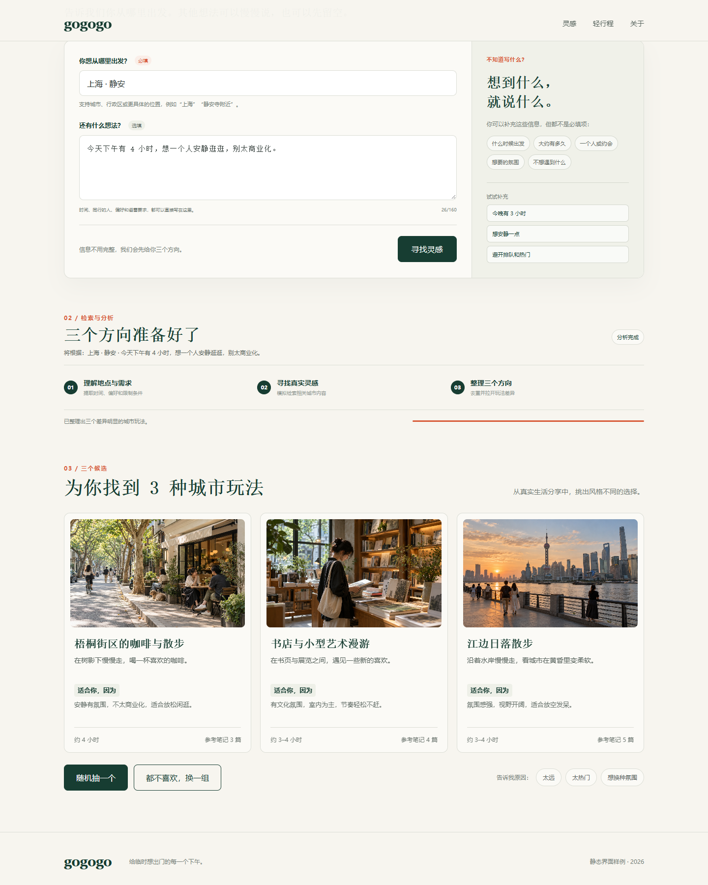
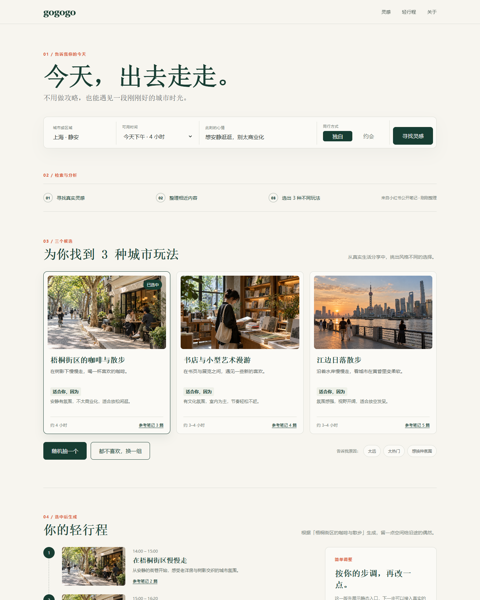

界面 Demo
以下图片展示输入、方向卡和细化结果的界面形式。它们是设计示意，不是实时搜索结果，也不会调用小红书或模型 API。


要运行真实流程，请先按仓库 README 配置模型接口和小红书登录，再打开探索页面。
以下图片展示输入、方向卡和细化结果的界面形式。它们是设计示意，不是实时搜索结果，也不会调用小红书或模型 API。


要运行真实流程，请先按仓库 README 配置模型接口和小红书登录，再打开探索页面。